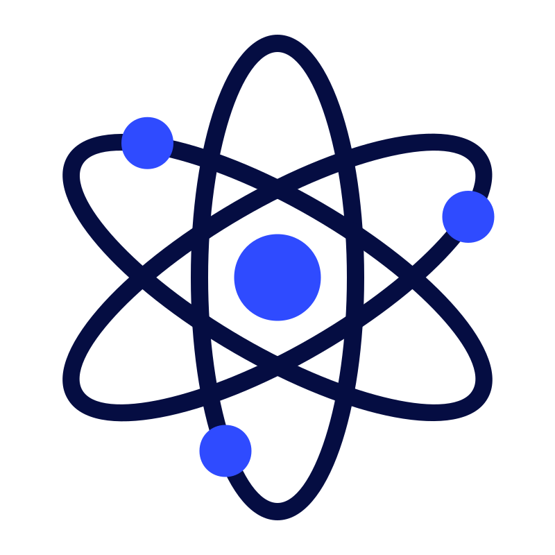

About Me→
Get to know me better, my journey, and what drives me in the world of web development.
Muhammad Zain I'm possionate digital creater and a problem solver, dedicated to crafting meaningful web experiences.My Journey in web development is a testament to my commitment to continuous learning and growth
My Story
My journey in web development started with a simple curiosity about how websites work. Over time, this curiosity evolved into a passion for creating digital experiences that are both functional and aesthetically pleasing. I've had the privilege of working on various projects, each teaching me something new and helping me grow as a developer.My approach to web development is rooted in a desire to solve problems and create solutions that make a difference. I believe that technology has the power to transform lives, and I strive to harness that power in every project I undertake. Whether it's building a responsive website, developing a complex web application, or optimizing user experience, I am committed to delivering high-quality work that meets the needs of users and clients alike.
Every pixel is an opportunity to tell a story and connect with people on a deeper level.
In my work, I strive to create designs that not only look great but also communicate a message and evoke an emotion. I believe that the best web experiences are those that seamlessly blend form and function, creating a harmonious relationship between the user and the content.My goal is to continue growing as a web developer, learning new technologies, and pushing the boundaries of what's possible in the digital space. I am excited about the future of web development and look forward to contributing to this ever-evolving field.
My Experience
I have had the opportunity to work with a variety of clients and projects, each providing unique challenges and learning experiences. My experience spans across different industries, allowing me to adapt and deliver solutions that meet the specific needs of each client.
My Education
I have pursued formal education in web development, complemented by continuous self-learning and professional development. This combination of structured learning and hands-on experience has equipped me with a solid foundation in web technologies and best practices.

Clean Design
I believe in integrity, creativity, and collaboration. These values guide my work and interactions with clients and colleagues, ensuring that I deliver solutions that are not only effective but also ethical and innovative.
Clean Design
I believe in integrity, creativity, and collaboration. These values guide my work and interactions with clients and colleagues, ensuring that I deliver solutions that are not only effective but also ethical and innovative.

Clean Design
I believe in integrity, creativity, and collaboration. These values guide my work and interactions with clients and colleagues, ensuring that I deliver solutions that are not only effective but also ethical and innovative.
2+
Year Experience
5+
Happy Client
5+
Projects
2+
Technologyies
Let's Work Together
Lets have some converstaion